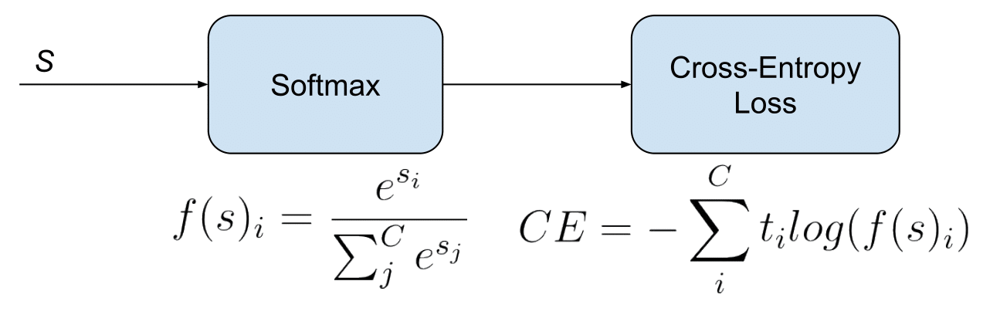

Also called Softmax Loss. It is a Softmax activation plus a Cross-Entropy loss. If we use this loss, we will train a CNN to output a probability over the classes for each image. It is used for multi-class classification.

In the specific (and usual) case of Multi-Class classification the labels are one-hot, so only the positive class keeps its term in the loss. There is only one element of the Target vector which is not zero . So discarding the elements of the summation which are zero due to target labels, we can write:
Where Sp is the CNN score for the positive class.
Defined the loss, now we’ll have to compute its gradient respect to the output neurons of the CNN in order to backpropagate it through the net and optimize the defined loss function tuning the net parameters. So we need to compute the gradient of CE Loss respect each CNN class score in ss. The loss terms coming from the negative classes are zero. However, the loss gradient respect those negative classes is not cancelled, since the Softmax of the positive class also depends on the negative classes scores.
The gradient expression will be the same for all except for the ground truth class , because the score of is in the nominator.
After some calculus, the derivative respect to the positive class is:
And the derivative respect to the other (negative) classes is:
Where snsn is the score of any negative class in different from CpCp.
- Caffe: SoftmaxWithLoss Layer. Is limited to multi-class classification.
- Pytorch: CrossEntropyLoss. Is limited to multi-class classification.
- TensorFlow: softmax_cross_entropy. Is limited to multi-class classification.
In this Facebook work they claim that, despite being counter-intuitive, Categorical Cross-Entropy loss, or Softmax loss worked better than Binary Cross-Entropy loss in their multi-label classification problem.
→ Skip this part if you are not interested in Facebook or me using Softmax Loss for multi-label classification, which is not standard.
When Softmax loss is used is a multi-label scenario, the gradients get a bit more complex, since the loss contains an element for each positive class. Consider are the positive classes of a sample. The CE Loss with Softmax activations would be:
Where each in is the CNN score for each positive class. As in Facebook paper, I introduce a scaling factor to make the loss invariant to the number of positive classes, which may be different per sample.
The gradient has different expressions for positive and negative classes. For positive classes:
Where is the score of any positive class.
For negative classes:
This expressions are easily inferable from the single-label gradient expressions.
As Caffe Softmax with Loss layer nor Multinomial Logistic Loss Layer accept multi-label targets, I implemented my own PyCaffe Softmax loss layer, following the specifications of the Facebook paper. Caffe python layers let’s us easily customize the operations done in the forward and backward passes of the layer:
Forward pass: Loss computation
For full code, take a look at here.
def forward(ctx, x, target):
"""
forward propagation
"""
assert x.dim() == 2, "dimension of input should be 2"
exp_x = torch.exp(x)
y = exp_x / exp_x.sum(1).unsqueeze(1).expand_as(exp_x)
# parameter "target" is a LongTensor and denotes the labels of classes, here we need to convert it into one hot vectors
t = torch.zeros(y.size()).type(y.type())
for n in range(t.size(0)):
t[n][target[n]] = 1
output = (-t * torch.log(y)).sum() / y.size(0)
# output should be a tensor, but the output of sum() is float
output = torch.Tensor([output]).type(y.type())
ctx.save_for_backward(y, t)
return output
Backward pass: Gradients computation
@staticmethod
def backward(ctx, grad_output):
"""
backward propagation
# softmax with ce loss backprop see https://www.youtube.com/watch?v=5-rVLSc2XdE
"""
y, t = ctx.saved_tensors
# grads = []
# for i in range(y.size(0)):
# grads.append(softmax_grad(y[i]))
grads = softmax_grad_vectorized(y)
grad_input = grad_output * (y - t) / y.size(0)
return grad_input, None
The Caffe Python layer of this Softmax loss supporting a multi-label setup with real numbers labels is available here